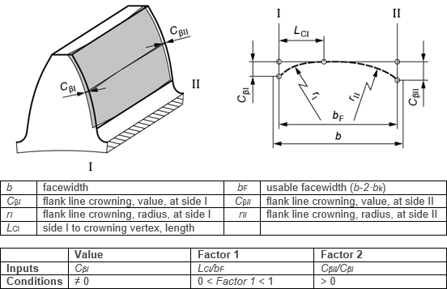

|
|
|


齿面线鼓形修整，偏心
图（见图15.52）显示了根据齿面简图定义的偏心齿面线鼓形修整。值、因子1 和 因子2 设置也在此图中显示。该修整应用于齿轮的有效齿宽。
偏心齿面线鼓形修整发生在材料以弧形方式沿齿宽方向被去除，从齿廓保持不变的公共点开始。因子1可用于设置鼓形修整中心点。侧I和侧II的鼓形修整值可以不同于偏心齿面线鼓形修整的鼓形修整值。

图15.52：偏心齿面线鼓形修整
Flank line crowning, eccentric
Figure (see Figure 15.52) shows the eccentric flank line crowning as defined in the flank line diagram. The Value, Factor 1 and Factor 2 settings are also shown in this figure. The modification is applied over the effective facewidth of the gear.
Eccentric flank line crowning occurs where material is removed in an arc-like manner, in the direction of the facewidth, starting from a common point at which the tooth profile remains unchanged. Factor 1 can be used to set the crowning center point. The crowning value on side I and side II can differ from the crowning value for eccentric flank line crowning.
Figure 15.52: Eccentric flank line crowning